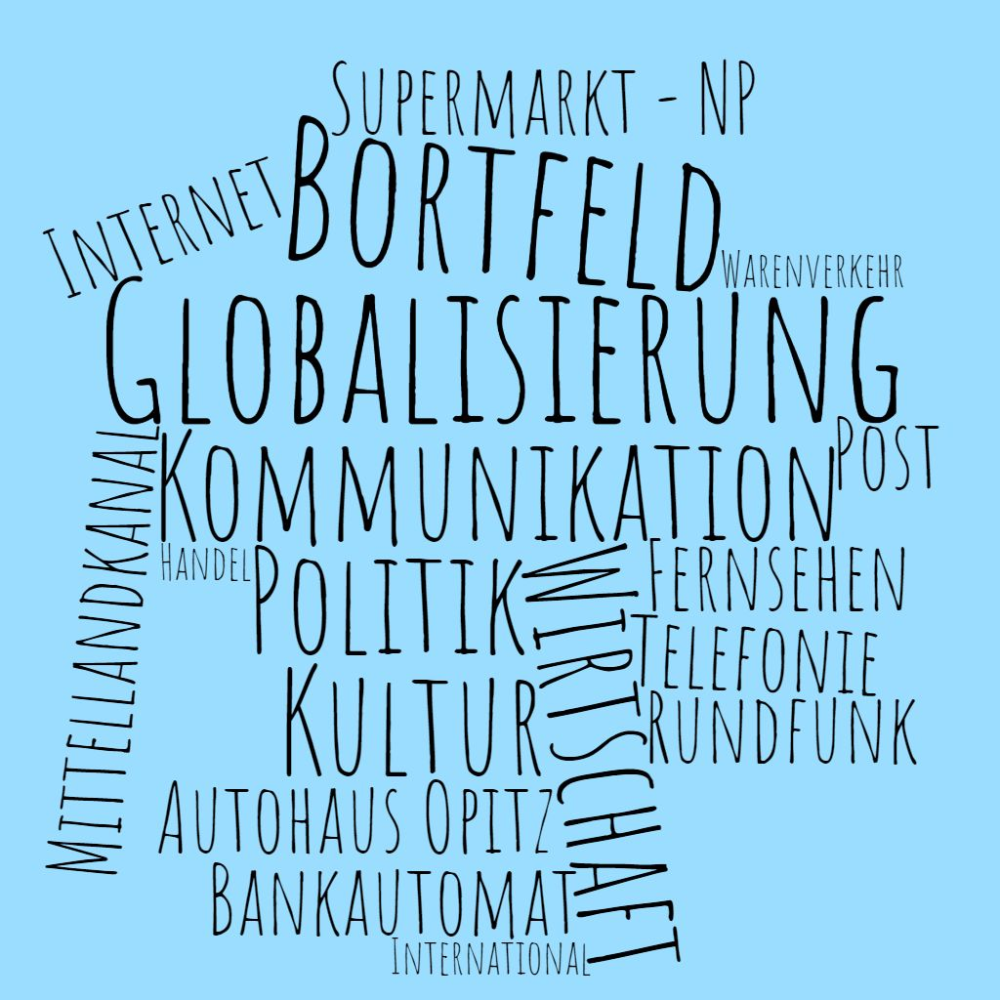
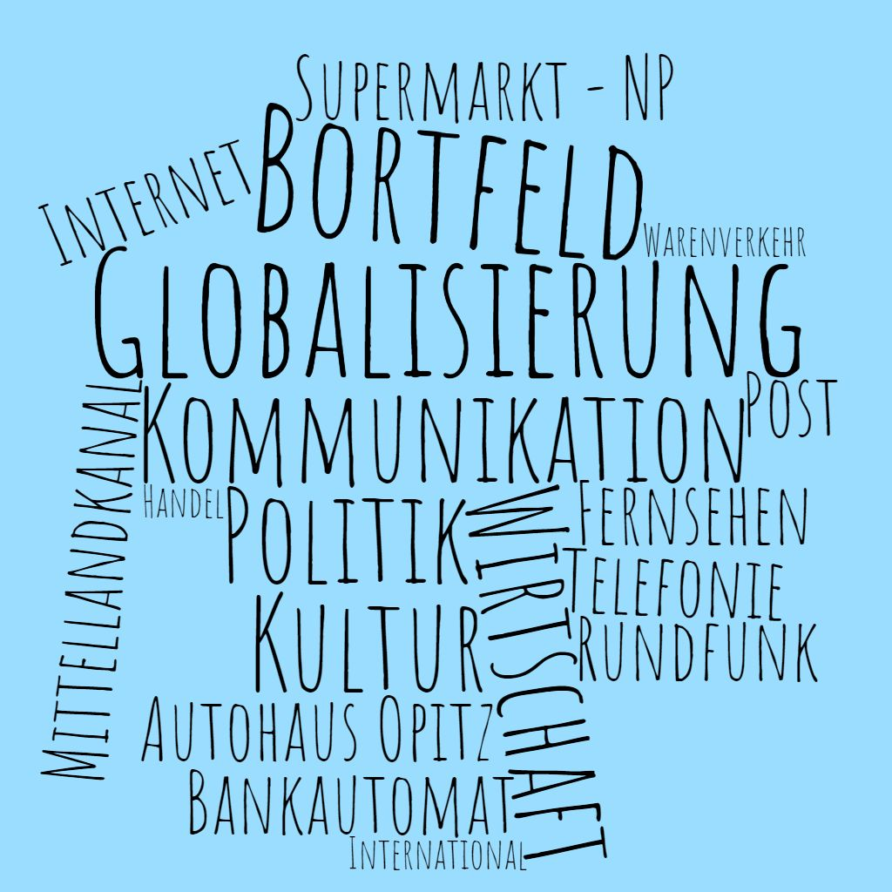

Das Bild zeigt einen Mobilfunkmast, der den Zugang zum Internet in Bortfeld repräsentieren soll. Dies geschieht faktisch aber nicht nur durch das Mobilfunknetz, sondern auch die DSL-Leitungen und die Glasfaserleitungen, die allerdings unterirdisch verlegt sind.
Das Internet ist heutzutage einer der wohl wichtigsten Treiber der Globalisierung. Dabei spielen alle Aspekte eine Rolle. Allen voran ist der Aspekt der Kommunikation und des kulturellen Austausches zu nennen: Über soziale Medien kann man sehr gut mit Menschen aus aller Welt Kontakt aufnehmen. Dabei lernt man auch oft etwas über fremde Kulturen, da in Posts, Videos, Chats und anderen Medien im Internet häufig die Kultur des jeweiligen Landes thematisiert wird. Sprachkurse, automatische Übersetzungen helfen Sprachbarrieren zu verringern. Landestypische Produkte können weltweit bestellt werden und machen kulturelle Besonderheiten auch über Landesgrenzen hinweg erfahrbar.
Aber auch zur Globalisierung der Wirtschaft trägt das Internet bei, denn über die großen Handelsplattformen werden viele Waren bestellt. Durch eine stärkere Transparenz der Preise und die Vergleichbarkeit der Angebote wird es für den Konsumenten und auch für die Einkäufer in Unternehmen einfacher, verschiedene Anbieter zu vergleichen, wobei es keine oder allenfalls eine untergeordnete Rolle spielt, wo der Standort des Unternehmens ist. Die Anbieter müssen sich einem globalen Wettbewerb stellen.
Mit Blick auf die Politik trägt das Internet zur Globalisierung bei, indem politische Meinungen und Entscheidungen sehr schnell in der ganzen Welt verbreitet werden, zumindest da, wo es ein frei zugängliches Internet gibt. Über das Internet können sich politische Gruppen auch über Ländergrenzen hinweg formieren.